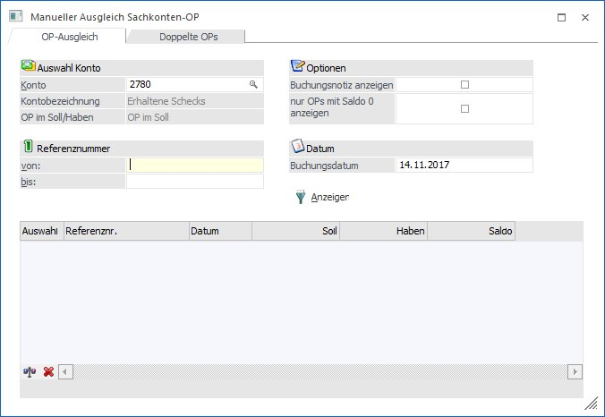
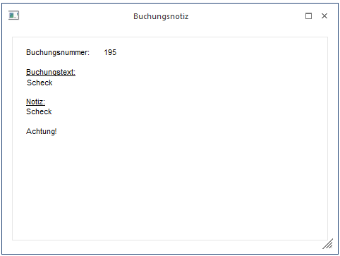
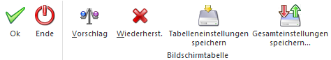

Über den Menüpunkt
1 Buchen
1 Fakturenausgleich
1 Sachkonten-OP-Ausgleich
kann ein manueller Abgleich von Sachkonten-OP durchgeführt werden.
Damit können, gleich dem "Fakturenausgleich manuell" Offene Posten für Sachkonten mit unterschiedlicher Referenznummer innerhalb eines Sachkontos gegeneinander ausgeglichen werden.
Wird eine Sach-OP mit einer Referenznummer ausgeziffert, wird vom System automatisch auch eine "Auszifferungs-Zeile" erstellt (und nicht nur die Sach-OP auf "Ausgeglichen" gesetzt. Damit ergibt sich auch rechnerisch nachvollziehbar der Saldo NULL innerhalb der Referenznummer.
Wird eine solche Referenznummer später z.B. wieder eröffnet, bleibt die damals zur Auszifferung herangezogene Referenznummer natürlich ausgeziffert, während sämtliche Zeilen der wiedereröffneten Referenznummer auf "Offen" gesetzt werden. Durch die oben erwähnte "Auszifferungs-Zeile" ist in Summe auf dieser Referenznummer aber trotzdem nur der Saldo der Buchung offen, mit der die Referenznummer neu eröffnet wurde.

Ø Konto
Nach Auswahl des Kontos (durch Drücken der F9-Taste kann nach allen bereits angelegten Konten gesucht werden) wird die Kontenbezeichnung sowie die Art der geführten OPs (Soll oder Haben) angezeigt.
Ø Referenznummer von / bis
Hier kann eine Einschränkung der OPs vorgenommen werden, die in der Tabelle dargestellt werden sollen.
Ø Buchungsnotiz anzeigen
Ist diese Checkbox aktiv, wird ein Notiz-Info-Fenster mit den im Formular definierten Infos zur aktuell ausgewählten OP-Zeile angezeigt.

Ø nur OPs mit Saldo 0 anzeigen
Nach Auswahl dieser Checkbox werden nur die OPs angezeigt, die innerhalb einer Referenznummer zwar im Soll und im Haben den gleichen Betrag stehen haben, aber trotzdem noch nicht als Ausgeglichen markiert wurden.
Ø Datum
Mit diesem Datum wird die Auszifferung durchgeführt und als "Dokumentations-Buchungszeile" auch im Journal gespeichert. Durch diese Funktionalität ist nicht nur die lückenlose Nachvollziehbarkeit der manuellen Auszifferung gewährleistet, sondern damit ist es auch möglich, Auszifferungen nachträglich über Stornierung der dazugehörigen Buchung-Dokumentationszeile zu stornieren (wobei die Sach-OPs wieder auf "offen" gesetzt werden).
In der Tabelle werden folgende Informationen angezeigt:
Ø Referenznummer
Ø Datum
Anzeige des frühesten Datum einer Buchung für die Referenznummer
Ø Soll
Summe aller Soll-Buchungen für diese Referenznummer
Ø Haben
Summe aller Haben-Buchungen für diese Referenznummer
Ø Saldo
Saldospalte der Sach-OP
Durch Aktivieren der Checkbox "Auswahl" können einzelne OPs ausgewählt werden, die dann gegeneinander ausgeziffert werden sollen.
Buttons

Ø Ok
Nach Drücken des OK-Buttons oder der F5-Taste werden die
ausgewählten OPs - nach vorheriger Sicherheitsabfrage -
ausgeziffert.
Ø Ende
Nach Drücken der Ende-Taste oder der ESC-Taste wird das Fenster geschlossen.
Ø Vorschlag
Mit dem Vorschlag-Button werden jene Sachkonten-OPs markiert
die im Soll und Haben denselben Betrag aufweisen, aber im Zuge der
Buchungserfassung nicht ausgeglichen wurden.
Ø Wiederherst.
Mit dem Wiederherstellen-Button werden eventuelle Markierungen in der Auswahl wieder entfernt.
Fensterbutton
Ø
Mit dem Anzeigen-Button werden alle Sachkonten-OPs entsprechend der Einstellung angezeigt
Hinweis
Der Menüpunkt "Sachkonten-OP-Ausgleich" steht auch für Vorjahre zur Verfügung.
D.h. wird dieser Menüpunkt in einem Wirtschaftsjahr aufgerufen, dass nicht dem aktuellen/höchsten Vorhandenen entspricht, so werden in der Tabelle nur all jene Offenen Posten angezeigt, die bis zum gewählten Wirtschaftsjahr erzeugt wurden. Weitere Buchungen mit derselben Referenznummer (auch aus Folgejahren) werden dabei natürlich berücksichtigt, nicht aber jene Offenen Posten, die zur Gänze in einem Folgejahr zum aktuell gewählten Jahr gebucht wurden.